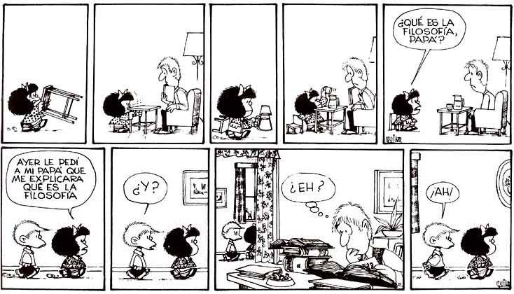

Tema 6 · La disertación filosófica
Lo terrible de la escritura, Fedro, es que se parece de veras a la pintura: también las criaturas de esta se presentan como si estuvieran vivas, pero si les preguntas algo callan con toda solemnidad. Lo mismo pasa con los escritos.
—Platón, Fedro, 275d · traducción de Claude, del griego
Leer hace al hombre completo; conversar, al hombre pronto; y escribir, al hombre exacto. Y por eso, si un hombre escribe poco, necesitará gran memoria; si conversa poco, necesitará ingenio presente; y si lee poco, necesitará mucha astucia para aparentar que sabe lo que no sabe.
—Francis Bacon, «De los estudios», Ensayos (1625) · traducción de Claude, del inglés
Rara vez podremos participar en una discusión que respete las condiciones ideales del discurso que propuso Jürgen Habermas (1929-2026), aunque solo sea porque todos los participantes necesarios tendrían que poder y querer participar, además de conocer sus criterios y principios (§18).
Es mucho más posible que realices una argumentación filosófica tú solo, sin más debate que el que puedas realizar tratando de ponerte en posiciones diversas a la tuya. En este caso te vendrá muy bien el entrenamiento filosófico de este curso.
§19 · Qué es una disertación y cómo se construye
Definición y tesis. Una disertación filosófica es una exposición sistemática y razonada de argumentos a favor y en contra de una determinada afirmación, tesis o problema filosófico con el objetivo de justificar una posición respecto al mismo, que idealmente parte de unos hechos o consideraciones para alcanzar una conclusión.
Nos plantearemos1 una tesis (afirmación) sobre la que tendremos que disertar.
Los pasos de la disertación. La disertación consiste en:
Reflexionar sobre la tesis, tratando de comprenderla tanto en lo que dice como en el contexto académico en el que nos aparece en el curso.
Buscar argumentos válidos a favor y en contra de la tesis. Debes poner el mismo empeño en los argumentos de ambos signos. Recuerda que se trata de una disertación, no de una forma de manipular al lector para convencerlo de tus posiciones. Para ello tendrás que informarte suficientemente.
Consejo: ten en cuenta que cuando te pongas a reflexionar sobre el tema te saldrán uno o dos argumentos inmediatamente. Es posible que esos argumentos se nos hayan ocurrido a todos. Es mejor dedicarle algo más de tiempo a la reflexión y dar con argumentos más personales, más novedosos o menos trillados.
Dotar de pruebas a todos los argumentos. Además de formular el argumento, deberás justificarlo y apoyarlo con información estadística, datos, ejemplos o cualquier otro tipo de prueba.
Sopesar los argumentos a favor y en contra para decidir cuál es tu posición. La posición no tiene que ser necesariamente la propuesta o la contraria; la práctica de la Filosofía nos llevará a matizar y en muchos temas complejos la respuesta, nuestra posición, dependerá de las circunstancias2.
Rebatir los argumentos en contra de tu posición con contraargumentos. Si los argumentos en contra de tu posición no te convencieron tanto como los que soportan tu posición, será por algo. Explica en qué fallan o por qué son insuficientes. ¡Recuerda el principio de honestidad!
Reflejarlo todo de forma ordenada en un escrito.
La estructura del escrito. En su forma más básica, el escrito resultante es muy simple, y tendrá esta estructura, en la que cada punto puede corresponder a uno o varios párrafos:
- Introducción. Explica cuál es el tema de la disertación y explicita tu posición3.
- Argumentos a favor. Expón los dos argumentos más importantes que soportan tu posición y aporta las pruebas correspondientes. Puedes utilizar un párrafo para un argumento y sus pruebas o puedes dar el argumento en un párrafo y las pruebas en el siguiente, si crees que así quedará más claro4.
- Argumentos en contra. Lo mismo que el punto anterior, pero exponiendo los argumentos en contra de tu posición.
- Refutación de los argumentos en contra, por medio de contraargumentos. Puedes reunirlos todos aquí o poner cada uno detrás del argumento contrario que rebate, que es lo que verás hacer en el ejemplo.
- Conclusión, en la que repites tu posición precediéndola de una fórmula del estilo de «Por todos estos argumentos he llegado a la conclusión de que [
enuncia tu posición]», que será la misma que aparece en la introducción.
§20 · Disertación de ejemplo: la pena de muerte
Aquí tienes un modelo de disertación para guiarte en el tipo de ejercicio que trabajaremos este curso. Lo he dividido en párrafos marcados con viñetas para evidenciar la estructura. Además, he añadido etiquetas [marcadas así] con referencia a las distintas partes de la disertación que hemos explicado un poco más arriba para ayudarte a entender mejor la estructura y para que tú mismo las utilices en tus disertaciones.
Ten en cuenta que una disertación así es el objetivo final y que hay que practicar mucho para alcanzarlo. Irás mejorando con cada ejercicio.
En contra de la pena de muerte
[Explicación del tema] La pena de muerte es la condena impuesta por un tribunal legítimo y que ha respetado todas las garantías procesales a un acusado y que consiste en matarlo. Si no se dieran esas circunstancias, no se trataría de la pena de muerte sino de un asesinato o una ejecución sumaria. [Posición personal] Estoy en contra de la pena de muerte en todos los casos.
[Primer argumento a favor de mi posición] Me opongo a la pena de muerte en primer lugar porque atenta contra el Derecho Humano más importante, el derecho a la vida, [Prueba] recogido en el artículo 3.º de la Declaración Universal de los Derechos Humanos5. El Estado no debiera tener el derecho de asesinar a sus ciudadanos. [Añadido al argumento] Asimismo, ignora o niega la posibilidad de redención del delincuente6.
[Segundo argumento a favor de mi posición] Además, siempre existe la posibilidad de ejecutar individuos inocentes; de que existan fallos en los procedimientos judiciales o en las pruebas condenatorias; de jueces o jurados sesgados y otros problemas que anularían las garantías procesales. La vida, una vez arrebatada, no puede devolverse, por lo que quitarla es un acto definitivo sin posibilidad de reversión.
[Pruebas] Según la Equal Justice Initiative, en los EUA han ejecutado a 1676 personas desde 1973. En ese mismo periodo, 203 condenados a muerte han sido exonerados, es decir, han salido del corredor con la condena anulada: por cada ocho ejecutados, uno7. Y eso son tan solo los casos que han podido ser demostrados. No sabemos la cantidad de ejecuciones de inocentes que habrá habido.
[Primer argumento en contra de mi posición] Por contra, los defensores de la pena de muerte alegan que esta condena sirve para disuadir a potenciales criminales de cometer los más graves crímenes; saber que si son apresados se enfrentan a la pena capital hará que se lo piensen mucho antes de delinquir.
[Contraargumento] Ese argumento supone que quien va a matar consulta antes la pena que le caería y echa cuentas; y muchos homicidios se cometen en caliente, sin cuentas de ninguna clase. [Pruebas] Los datos tampoco encuentran la disuasión por ningún lado: desde 1990, y todos los años, los Estados de los EUA que tienen pena de muerte han registrado más homicidios que los que no la tienen —en 2019, 5,37 frente a 4,17 por 100 000 habitantes—, y el orden no se ha invertido ni una sola vez8. Con eso no pruebo que la pena de muerte cause homicidios, sino algo más modesto y que basta: el efecto disuasorio que se le atribuye no se ha demostrado nunca, y demostrarlo le toca a quien lo afirma.
[Segundo argumento en contra de mi posición] Además, los crímenes que suelen condenarse con la pena capital son muy graves y las víctimas necesitan justicia y compensación por ello. La pena debe igualar la gravedad del crimen.
[Contraargumento] La venganza no es una forma de justicia. Encarcelar a alguien por largo tiempo o incluso de por vida es un castigo muy severo y garantiza que el condenado no vuelva a repetir el crimen en la sociedad. La Justicia debe limitarse a tratar de reinsertar al condenado y, si no es posible, evitar que cometa nuevos crímenes.
[Conclusión] Como he argumentado, la pena de muerte es inmoral, irreversible e ineficaz para evitar la delincuencia. Por lo tanto, [Posición personal] me opongo a la pena de muerte en cualquier caso y considero que la máxima pena debiera ser la condena de cárcel no perpetua9.
§21 · Una disertación mediocre, y qué le falta
La de arriba es el objetivo. Esta es la que sale el primer día, y no la traigo para que te rías de ella: la escribimos todos, y lo que la separa de la otra no es talento, es una revisión. Léela entera antes de mirar el diagnóstico y apunta por tu cuenta lo que le falla; después compara.
A favor del voto obligatorio
[1] El voto obligatorio es un tema muy debatido hoy en día. En mi opinión depende de cada caso, aunque yo creo que sería bastante positivo.
[2] En primer lugar, está demostrado que cuando votar es obligatorio participa mucha más gente, y eso hace que la democracia sea más representativa. [3] Además, si vota todo el mundo, los resultados reflejan mejor lo que quiere la sociedad en su conjunto.
[4] Los que están en contra dicen que obligar a votar es una dictadura y que le quita libertad a la gente.
[5] Pero yo pienso que la participación es un valor fundamental de la democracia y que hay que defenderla.
[6] Por todos estos argumentos he llegado a la conclusión de que el voto debería ser obligatorio, porque además así se acabaría con la abstención de los jóvenes, [7] y aquí ya vimos el año pasado adónde lleva eso.
Qué le pasa, y qué hacer con cada cosa. Siete fallos, y ninguno es de ortografía.
- La introducción no explica el tema y la posición no se moja. «Un tema muy debatido» no dice qué es el voto obligatorio ni dónde existe, y «depende de cada caso, aunque yo creo que sería bastante positivo» no es un matiz: es no elegir. Arréglalo así: define en una frase qué significa aquí «obligatorio» —¿multa?, ¿solo acudir a la urna?— y enuncia tu posición de manera que alguien pueda contradecirla.
- No hay prueba: hay una fórmula que suena a prueba. «Está demostrado» sin decir quién lo demostró ni dónde es un argumento de autoridad al que le falta la autoridad (§59). Arréglalo así: nombra el país, el dato y de dónde lo sacas; y si no puedes, quita el «está demostrado» y quédate con lo que sí sostienes.
- El segundo argumento es el primero otra vez. «Participa más gente, luego es más representativa» y «si vota todo el mundo, los resultados reflejan mejor a la sociedad» son la misma idea con otras palabras, y por eso caen juntas. Arréglalo así: busca un argumento de otra familia —uno moral, uno práctico, uno histórico— y comprueba que aguante en pie aunque el primero se venga abajo.
- El argumento contrario está dibujado para perder. Nadie sostiene que multar por no votar sea una dictadura. El argumento de verdad es más fino y bastante más difícil: quien defiende el derecho a votar defiende también el derecho a no hacerlo, porque abstenerse es una manera de decir algo. Refutar la versión burda tiene nombre (§59). Arréglalo así: escribe el argumento contrario en su versión más fuerte, la que a ti te costaría contestar.
- Eso no es un contraargumento: es la posición repetida. «Pero yo pienso que la participación es fundamental» no dice en qué falla lo anterior; vuelve a decir lo que ya decías, y más alto. Arréglalo así: un contraargumento ataca una pieza concreta del argumento contrario —el dato, el paso de un punto al siguiente o el alcance de la conclusión—. Elige cuál y dilo.
- La conclusión mete un argumento nuevo. La abstención de los jóvenes no ha aparecido antes en ningún sitio, así que entra en la última línea sin prueba y sin que nadie haya podido discutirla. Arréglalo así: si el argumento es bueno, súbelo al cuerpo y trabájalo; si no lo es, quítalo. La conclusión recoge, no añade.
- Da por sabido algo que solo sabes tú. «Aquí ya vimos el año pasado adónde lleva» funciona con quien estuvo en esa clase y con nadie más. Arréglalo así: cuéntalo entero o no lo cuentes. Y este fallo no es un descuido tonto, sino el más difícil de ver de los siete, porque para verlo tendrías que olvidar lo que sabes. Tiene nombre propio y es el asunto del apartado siguiente.
§22 · La maldición del conocimiento
En 1990, en la Universidad de Stanford, Elizabeth Newton hizo un experimento que se puede repetir en clase en diez minutos. Formó cuarenta parejas: una persona golpeaba con el dedo sobre la mesa el ritmo de una canción conocida y la otra, sentada de espaldas, tenía que adivinar cuál era. Después de cada canción le preguntaba a quien acababa de golpearla qué probabilidad había de que su pareja hubiera acertado. La media de las respuestas fue el 50 %. De ciento veinte canciones se acertaron tres, un 2,5 %. Y el dato que remata el asunto: la estimación más baja de todas fue del 10 %, así que la realidad quedó por debajo de lo que había previsto hasta el más pesimista.
La explicación es sencilla y es incómoda. Quien golpea no oye golpes: oye la canción entera, con su letra y sus instrumentos, sonando dentro de su cabeza mientras el dedo marca el compás. Quien escucha oye una serie de ruidos secos. El que golpea no puede dejar de oír lo que sabe, y por eso le parece imposible que el otro no lo oiga también.
Un año antes, tres economistas —Colin Camerer, George Loewenstein y Martin Weber— le habían puesto nombre a eso: la maldición del conocimiento10. Lo midieron con dinero de por medio y encontraron algo peor de lo que esperaban: pagar por acertar no lo corrige, y decirle a la gente en qué se había equivocado, tampoco. Su formulación es la que aquí te interesa: la maldición hace que tu propia pericia te parezca más compartida de lo que está.
Dónde te toca a ti. Cuando escribes una disertación acabas de estudiar el tema, así que llevas la canción dentro. El paso que más falta le hace a tu lector es justamente el que a ti ya no te parece un paso, porque hace tres días que lo tienes claro; y la palabra que aprendiste el martes la usas el jueves como si fuera de toda la vida. El séptimo fallo del ejemplo de antes no era despiste: era esto.
La revisión del día siguiente. Contra un sesgo no sirve proponerse tener cuidado, porque el sesgo consiste precisamente en no notarlo. Hace falta un procedimiento, y este se aplica sobre el texto ya escrito, a poder ser al día siguiente.
- Subraya cada término técnico y cada dato que hayas dado por sabido. Uno por uno, pregúntate si tú lo sabías hace un mes. Lo que no supieras, explícalo.
- Busca «obviamente», «está claro que», «evidentemente» y «como todo el mundo sabe». Tacha la palabra y mira qué queda: si lo que queda ya no se sostiene solo, ahí faltaba un argumento y la palabra lo estaba tapando.
- Lee tu introducción y tu conclusión seguidas, saltándote todo lo del medio. Si te siguen convenciendo, desconfía: puede que te esté convenciendo la canción de tu cabeza y no lo que hay escrito.
- Dáselo a alguien que no vaya a tu clase. No le pidas su opinión: pídele que te cuente qué defiendes y por qué. Lo que no sepa devolverte es exactamente lo que no llegaste a escribir.
El cuarto paso es el experimento de Newton puesto del revés, con tu disertación en el papel de los golpecitos. Es también el único de los cuatro que no puedes falsear.
§23 · Los diez mandamientos filosóficos de Bertrand Russell
Bertrand Russell (1872-1970) fue uno de los más influyentes filósofos, pensadores y activistas del siglo XX. En un artículo de 1951 que más tarde recogió en su autobiografía, reflexionando sobre su papel de profesor, nos dejó este decálogo de principios con los que guiarnos en la vida11.
Estos mandamientos van mucho más allá de la función docente; podemos aplicarlos todos al filosofar. Los pongo aquí precisamente porque resumen muy bien el carácter racional, honesto e impermanente de la buena Filosofía. Además defiende la verdad y la argumentación, criterios a recuperar en tiempos de posverdad, fake news y discursos identitarios, esencialistas y que apelan a nuestras más bajas pasiones.
- No estés absolutamente seguro de nada.
- No creas que merezca la pena avanzar ocultando las pruebas, porque las pruebas acaban saliendo a la luz.
- No intentes nunca desalentar el pensamiento, porque lo vas a conseguir.
- Cuando te encuentres con oposición, aunque venga de tu marido o de tus hijos, procura vencerla con argumentos y no con la autoridad, porque una victoria que depende de la autoridad es irreal e ilusoria.
- No tengas respeto por la autoridad de nadie, porque siempre se encuentran autoridades contrarias.
- No uses el poder para suprimir opiniones que te parezcan perniciosas, porque, si lo haces, serán ellas las que te supriman a ti.
- No temas ser excéntrico en tus opiniones, porque toda opinión hoy aceptada fue excéntrica alguna vez.
- Encuentra más placer en el disentimiento inteligente que en el acuerdo pasivo, porque, si valoras la inteligencia como es debido, aquel supone un acuerdo más hondo que este.
- Sé escrupulosamente veraz, aunque la verdad sea incómoda, porque más incómoda resulta cuando tratas de ocultarla.
- No envidies la felicidad de quienes viven en un paraíso de necios, porque solo un necio creerá que eso es felicidad.
Diez mandamientos que no mandan. ¿Te has fijado en la forma? Un ateo militante escribe un decálogo, y lo escribe a la manera del Éxodo: no te sientas, no creas, nunca intentes. La broma tiene fondo. Lee otra vez el primero: si no debes sentirte absolutamente seguro de nada, tampoco puedes obedecer los otros nueve como se obedece un mandamiento, porque obedecer sin discutir es una forma de estar seguro. Solo puedes examinarlos.
Nueve porqués y uno que falta. Vuelve a la lista fijándote solo en la palabra «porque». Nueve de los diez la llevan: no ocultes las pruebas porque saldrán a la luz; no respetes la autoridad ajena porque siempre habrá otra contraria; no envidies al que vive en el paraíso de los necios porque solo un necio llama felicidad a eso. Un mandamiento que da su razón ya no es un mandamiento: es un argumento con forma de imperativo, y un argumento se discute. El único que no da ninguna razón es el primero, que es justamente el que gobierna a los demás.
Dónde toca lo que acabas de aprender. Cuatro de estos mandamientos son, casi palabra por palabra, reglas de la disertación. El segundo te prohíbe esconder la prueba que te estorba. El cuarto exige vencer por argumentos y no por autoridad; su reverso tiene nombre técnico y lo verás más adelante (§59). El octavo, el del disenso inteligente, es lo que haces al redactar los argumentos contrarios con el mismo empeño que los tuyos, y no una versión ridícula fácil de tumbar. Y el noveno es el principio de honestidad, dicho por otra boca y con una palabra más estrecha: Russell no te pide que seas honrado, te pide que seas veraz, que es una exigencia distinta y más incómoda.
Y dónde chirría. El quinto te pide que no tengas respeto por la autoridad de otros. ¿No contradice eso la disertación, donde cada argumento debe ir apoyado en datos, estadísticas o fuentes? No dice lo que parece: Russell no sostiene que las autoridades no sirvan, sino que no deciden. La disertación de ejemplo lo reconoce en su nota al pie: citar el artículo 3.º de la Declaración Universal es un argumento de autoridad. La autoridad te entrega la prueba; la razón que convierte esa prueba en argumento la pones tú.
El trabajo. Dos preguntas de comprensión, dos de análisis y dos para llevar el decálogo a otro sitio y mojarte.
- El primer mandamiento es el único que no da una razón. Escríbela tú: ¿por qué no deberías sentirte absolutamente seguro de nada? Dos frases, y que la segunda no repita la primera.
- El sexto y el séptimo hablan los dos de opiniones incómodas, pero no se dirigen a la misma persona. ¿A cuál habla cada uno, al que tiene el poder o al que tiene la opinión rara? Explica qué cambia.
- El segundo te prohíbe ocultar las pruebas, pero su razón es que saldrán a la luz, no que esté mal. Formula tú una razón moral y decide cuál de las dos aguanta si nadie va a enterarse nunca.
- El cuarto elige un ejemplo doméstico —el marido, los hijos— pudiendo elegir un tribunal o un parlamento. ¿Qué gana con ese cambio de escenario? Piensa qué autoridad cuesta más reconocer como autoridad.
- Estos principios se presentan aquí como criterios a recuperar en tiempos de posverdad (§51). Elige el que hoy cueste más cumplir en una red social y defiende tu elección con un ejemplo que hayas visto tú.
- Escribe el mandamiento undécimo. Dos condiciones: que te sirva para el trabajo de este curso y que lleve su «porque». Después dáselo a alguien que sostenga que sobra y responde a lo que te conteste.

Has aprendido a reconocer una pregunta filosófica, a distinguir un argumento de una ocurrencia y a escribir una disertación que se sostenga. Fíjate ahora en lo que no has aprendido: ninguna de esas tres cosas te dice qué contestar. ¿De qué sirve un método que no garantiza ninguna respuesta? Piénsalo antes de contestar que de nada, porque es justo lo que vas a necesitar cuando la pregunta sea qué eres tú y la respuesta evidente empiece a hacer agua.
Vuelve ahora a la palanca del tranvía con que se abrió la unidad y contesta otra vez. Lo que te pido no es que cambies de respuesta, sino que escribas debajo la razón —una que valga también para el caso de tu madre—, y que mires si sigue llevándote a la misma mano.
Con esto tienes ya las herramientas y sabes para qué sirven. Empieza a usarlas en la lectura que cierra la unidad, donde los dos filósofos que fundaron esta asignatura contestan a la pregunta con la que la abriste: Sócrates dice ahí que filosofar es averiguar cuánto no sabes, y le costó la vida; Aristóteles, que se empieza por asombrarse, y lo cuenta como quien describe un placer.
Siendo honestos, el tema, problema o situación te la plantearemos tus profesores.↩︎
«Estoy a favor de tal cosa bajo esta y aquella circunstancias, pero estaría en contra en estas otras circunstancias» es una opción perfectamente razonable. Trataremos de proponer temas que permitan una toma de posición binaria. La brevedad de las disertaciones en este curso ayudará a una toma de posición más clara.↩︎
Por ejemplo: «estoy a favor/en contra de la pena de muerte».↩︎
Esto nos lleva a dos párrafos en caso de mantener en el mismo párrafo el argumento y sus pruebas o a cuatro si los separamos, habida cuenta de que te pediremos dos argumentos.↩︎
Podemos considerar esto un argumento de autoridad, porque expresado así, lo es. Sin embargo, dado el formato de la disertación filosófica como ejercicio de bachillerato, no procede la justificación de los DDHH aquí y ahora.↩︎
Esto podría ser un segundo argumento.↩︎
Cuidado con lo que dice esta proporción y con lo que no dice: no es la tasa de error de los tribunales, porque los exonerados y los ejecutados no son las mismas personas. Dice cuántas condenas a muerte se anularon por cada ejecución consumada, que ya es bastante. La Equal Justice Initiative toma los dos recuentos del Death Penalty Information Center.↩︎
Death Penalty Information Center, «Murder Rate of Death Penalty States Compared to Non-Death Penalty States», sobre datos del FBI; la serie va de 1990 a 2019. Y el matiz importa: el Consejo Nacional de Investigación de los EUA revisó en 2012 treinta años de estudios sobre disuasión y concluyó que ninguno permite decidir la cuestión, ni a favor ni en contra, porque ninguno compara la pena capital con la alternativa real, que es la cadena perpetua.↩︎
No debemos añadir nuevos argumentos, pruebas o información en la conclusión, pero esta referencia a la pena máxima alternativa no lo es; es, precisamente, una alternativa, ya que he negado la pena de muerte.↩︎
Newton, E. L. (1990). The Rocky Road from Actions to Intentions. Tesis doctoral, Universidad de Stanford; estudio primero. Camerer, C., Loewenstein, G. y Weber, M. (1989). «The Curse of Knowledge in Economic Settings: An Experimental Analysis». Journal of Political Economy, 97(5), 1232-1254; el nombre se lo sugirió Robin Hogarth. Lo único que redujo el sesgo a la mitad, en aquel experimento, fue competir en un mercado.↩︎
Apareció por primera vez en «The Best Answer to Fanaticism: Liberalism», The New York Times Magazine, 16 de diciembre de 1951, p. 42, donde Russell lo presenta como un decálogo que no viene a sustituir al antiguo, sino a completarlo; se recogió después en el tercer volumen de su autobiografía, publicado en 1969. La versión castellana que lees es traducción de Claude, de ese original inglés.↩︎
Y ahora analiza la viñeta. Mafalda hace una pregunta que suena elemental —«¿qué es la filosofía, papá?»— y su padre acaba el día hundido en los libros sin saber contestarla. Ahí está el chiste y ahí está la lección: hay preguntas fáciles de formular y difíciles de responder, y esa desproporción es la marca de una pregunta filosófica. La tira no ilustra el tema, lo argumenta.↩︎